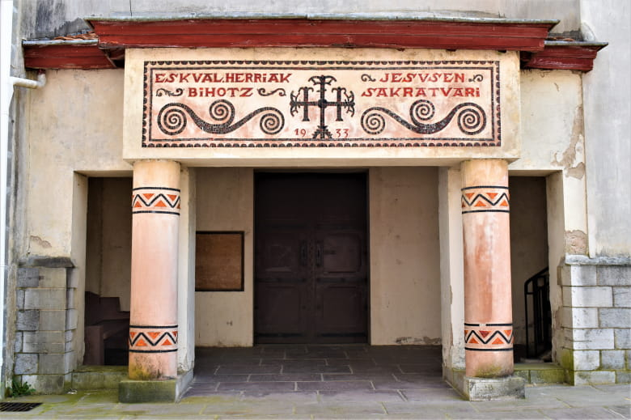

Escrito por Elisa Lardapide, 27 de novembro de 2026
Nesta semana, completam-se 214 anos desde o nascimento de Sauveur Lardapide. Nascido em 22 de novembro de 1812 na comuna de Ayherre na Baixa Navarra, região francesa do País Basco, Sauveur Lardapide foi um missionário da ordem de Hasparren importante para a preservação da língua basca (em específico, da variedade linguística behe-nafarrera).
Curiosamente, eu compartilho do mesmo sobrenome que Sauveur Lardapide (e isso não é coincidência). Eu sempre soube que minha família materna vinha da Argentina, afinal, desde criança escuto minhas tias falando em espanhol e contando dos parentes que permaneceram na Argentina. Mas eu não tinha ideia de como minha família foi parar na Argentina… até que, recentemente, encontrei os registros de imigração da minha família.
Em 1873, minha família embarcou no porto de Bordeaux e desembarcou no porto de Buenos Aires. Ficaram por um período no Asilo de Inmigrantes del Paseo de Julio antes de partirem para o interior de Buenos Aires. O interessante é que, antes de imigrarem para a Argentina, eles viviam na comuna de Bidarray na região de Baigorry-Ossès (região vizinha das comunas de Ayherre e Hasparren, comunas em que Sauveur Lardapide nasceu e cresceu). Isso me fez perceber que o fato de eu compartilhar o mesmo sobrenome que Sauveur Lardapide não é mera coincidência, somos de gerações diferentes da mesma família. No caso, eu descendo da parte da família que imigrou para a Argentina durante a diáspora basca no final do século XIX.
O que mais me chamou atenção nisso tudo, no entanto, foi descobrir que Sauveur Lardapide teve um papel importante na preservação da variedade behe-nafarrera da língua basca. Sou linguista de formação e trabalho ativamente com descrição de línguas, então descobrir isso me deu brecha para começar a fantasiar: que legal, não sou a primeira linguista da família! Mas deixando a fantasia de lado, Sauveur Lardapide não foi linguista e nem trabalhou diretamente com descrição de línguas. Na verdade, Sauveur Lardapide era um missionário da ordem de Hasparren e atuou como professor de francês para falantes de basco nas comunas de Hasparren, Bardos e Ispoure e também avaliava dicionários do par basco-francês. Apesar de não trabalhar diretamente com descrição de línguas, em seus manuscritos ele registrava contos populares e poemas em basco behe-nafarrera (Lardapide, 1869). A maior parte dos seus manuscritos sobreviveram e são utilizados atualmente nos estudos de língua e literatura bascas! No trabalho de Charritton (1992), é possível conferir a trajetória de Sauveur Lardapide e visualizar em melhor qualidade alguns dos manuscritos em basco behe-nafarrera que foram preservados.
Encerro este post com a balada Uretako Semea, documentada por Sauveur Lardapide (Charritton, 1992, p. 5):
| Uretako Semea |
| Goizean hotz da, eguerdiko bero da; |
| Uretatik lanhoa ateratzen da. |
| Martin Azantza uretara badoa. |
| Badoa, bainan amaren manuz ez doa. |
| Martin Azantza satin morez da beztitu, |
| Kalean gora gitarra soinuz pasatu, |
| Erregina, leihoan gertatu. |
| Erreginak bere anderaurenari: |
| «Nungorik nungo zaldun eskutari hori? |
| — Ez da ez hori ez zaldun, ez eskutari, |
| Uretako semea da hori». |
| Arranda bat eman nezake, |
| Hura etzan den sabelari, |
| Bai eta benedika hari eman dion ugatza. |
| Isterbegiek laster zaien erregeri, |
| Erregeak berehala gutunarekin mandatari, |
| Kausi, dadila haren gortean laburki. |
| Botak jauntzi eta igan zaldiari: |
| «Jainkoak egun on dizula, erregeren gortea! |
| — Bai eta hiri ere, Martin Azantza, Uretako Semea». |
| «Martin Azantza, hi omen hut traidore! |
| — Ez nauzu ni traidore, ez ene leinian batere, |
| Traidoreak badira ere, zure leinian dire, |
| Eta su zerori heier ogi emaile». |
| «Gezurti Errege, ez nuk oroitu ere, |
| Martin Azantza, gudulariz gudulari, |
| Nik dauzkiat zazpi sarroin hor». |
| «Sarroin horik ez dagoko gizonari. |
| Indatzu zazpi zaldun eskutari |
| Eta zerori heien gidari». |

Referências
CHARRITTON, Piarres. Aita Sauveur Lardapide (1812 - 1889): Hazparneko misionestaren paperak. In: EUSKALTZAINDIA. Luis Villasanteri omenaldia. Bilbao: Euskaltzaindia, vol. 6, pg. 143-159, 1992. Disponível em: https://www.euskaltzaindia.eus/dok/ikerbilduma/53383.pdf.
LARDAPIDE, Sauveur. Carnet de l'Abbé Lardapide, missionnaire [Manuscrito]. [S. l.]: [1844-1869]. 1 manuscrito (40 p. anotadas, 24 vistas digitalizadas), basco e francês. Coleção numérica: Langue basque. Localização física: Bibliothèque Bilketa, cota MS168-3. Disponível em: https://www.bilketa.eus/ark:/27020/go196110.